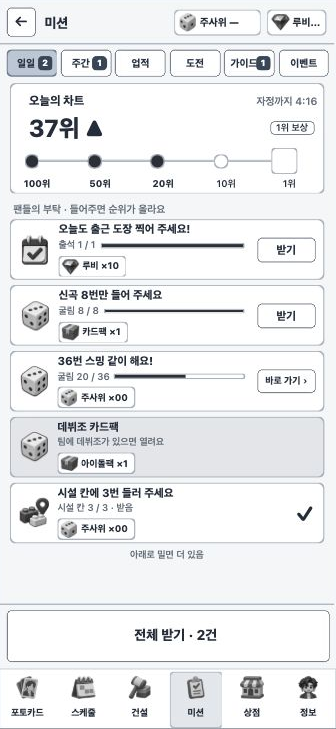
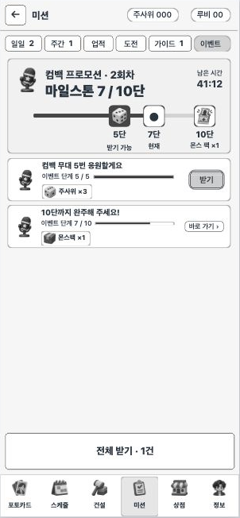
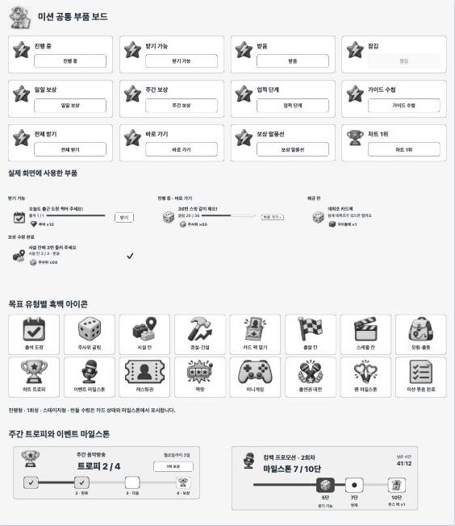

대표 화면
일일·주간·업적·도전·가이드·이벤트 탭을 전환합니다. 미션 카드는 팬의 부탁, 진행, 보상과 동작을 함께 보여 줍니다.


케이팝몬스터즈 · 7018 저장판 r9 · 390 × 844
일일·주간·업적·도전·가이드·이벤트 탭을 전환합니다. 미션 카드는 팬의 부탁, 진행, 보상과 동작을 함께 보여 줍니다.

카드 왼쪽에 목표를 나타내는 흑백 그림을 둡니다. 출석은 도장 달력, 굴림은 주사위, 출동은 가방, 시설 칸은 위치 표시를 씁니다. 지급 보상은 카드 안의 별도 아이콘과 수치로 보여 줍니다.
활성 미션 64행에서 쓰는 목표 키 21종을 흑백 그림 16종에 연결했습니다. 목표가 같은 활동끼리는 아이콘을 공유합니다. 진행형·1회성·스테이지형·번들 수령은 상태와 진행 형태로 표시합니다.

주간은 완료 체크, 다음 칸 윤곽, 마지막 트로피 그림을 씁니다. 이벤트는 큰 현재 단계와 진척선을 놓고 두 보상 문턱에 보상 종류를 직접 표시합니다.
상단 주사위와 루비는 HUD의 실제 흑백 아이콘을 씁니다. 6개 탭은 같은 높이와 너비를 쓰며 선택 상태와 보상 수를 분리합니다. 일일 5개째 상태 설명은 하단 버튼과 겹치지 않습니다. 1위 보상은 트로피와 인물 레이어가 함께 열리며, 주간 1위 안내를 일일 말풍선에서 분리했습니다.


캔버스에서 각 기능 행의 왼쪽에서 시작해 상세와 상태를 확인합니다.
| 화면·ID | 입력과 목적지 | 표시 기준 |
|---|---|---|
① 일일 · 오늘의 차트daily | 주간 → ② 주간 · 주간 음악방송 업적 → ③ 업적 · 단계 줄 (도전도 같은 틀) 도전 → 도전 · 서바이벌 시즌 가이드 → ④ 가이드 · 연습생 수첩 (한 번만) 이벤트 → ⑤ 이벤트 · 컴백 프로모션 (72시간 회차) 1위 보상 → 일일 → 보상 말풍선 5개째 받을 때 검수 → 일일 · 5개째 보상 직전 | 1탭 6개 · 일일 · 주간 · 업적 · 도전 · 가이드 · 이벤트(기존 이름 그대로) · 숫자 = 받을 것 · 받을 게 있는 탭부터 열림 |
일일 · 5개째 보상 직전daily-fifth | 일일 → ① 일일 · 오늘의 차트 주간 → ② 주간 · 주간 음악방송 업적 → ③ 업적 · 단계 줄 (도전도 같은 틀) 도전 → 도전 · 서바이벌 시즌 가이드 → ④ 가이드 · 연습생 수첩 (한 번만) 이벤트 → ⑤ 이벤트 · 컴백 프로모션 (72시간 회차) 받기 → ⑥ 차트 1위! (일일 5개째 받을 때) 전체 받기 → ⑥ 차트 1위! (일일 5개째 받을 때) | 1탭 6개 · 일일 · 주간 · 업적 · 도전 · 가이드 · 이벤트(기존 이름 그대로) · 숫자 = 받을 것 · 받을 게 있는 탭부터 열림 |
⑥ 차트 1위! (일일 5개째 받을 때)chart-reward | 받기 → 호출 화면 | 15개째를 받는 순간 · 순위가 1위로 올라가고 이 창 |
일일 → 보상 말풍선reward-hint | 닫기 → 호출 화면 | 1게이지 칸(차트 1위 · 트로피 · 가이드 전부 완료 · 업적 단계 점)을 누르면 그 칸 아래 말풍선 · 보상 아이콘 + 수량 · 열리는 조건 한 줄 |
② 주간 · 주간 음악방송weekly | 일일 → ① 일일 · 오늘의 차트 업적 → ③ 업적 · 단계 줄 (도전도 같은 틀) 도전 → 도전 · 서바이벌 시즌 가이드 → ④ 가이드 · 연습생 수첩 (한 번만) 이벤트 → ⑤ 이벤트 · 컴백 프로모션 (72시간 회차) 1위 보상 → 주간 → 1위 보상 안내 | 1위쪽 칸 · 주간 = 음악방송 트로피 · 이번 주 받은 주간 미션 수 · 월요일 0시에 처음부터 |
주간 → 1위 보상 안내weekly-reward | 닫기 → 호출 화면 | 1게이지 칸(차트 1위 · 트로피 · 가이드 전부 완료 · 업적 단계 점)을 누르면 그 칸 아래 말풍선 · 보상 아이콘 + 수량 · 열리는 조건 한 줄 |
③ 업적 · 단계 줄 (도전도 같은 틀)achievements | 일일 → ① 일일 · 오늘의 차트 주간 → ② 주간 · 주간 음악방송 도전 → 도전 · 서바이벌 시즌 가이드 → ④ 가이드 · 연습생 수첩 (한 번만) 이벤트 → ⑤ 이벤트 · 컴백 프로모션 (72시간 회차) | 1위쪽 칸 · 업적 = 커리어 연표 · 시즌이 끝나면 처음부터 |
도전 · 서바이벌 시즌challenge | 일일 → ① 일일 · 오늘의 차트 주간 → ② 주간 · 주간 음악방송 업적 → ③ 업적 · 단계 줄 (도전도 같은 틀) 가이드 → ④ 가이드 · 연습생 수첩 (한 번만) 이벤트 → ⑤ 이벤트 · 컴백 프로모션 (72시간 회차) | 1위쪽 칸 · 업적 = 커리어 연표 · 시즌이 끝나면 처음부터 |
④ 가이드 · 연습생 수첩 (한 번만)guide | 일일 → ① 일일 · 오늘의 차트 주간 → ② 주간 · 주간 음악방송 업적 → ③ 업적 · 단계 줄 (도전도 같은 틀) 도전 → 도전 · 서바이벌 시즌 이벤트 → ⑤ 이벤트 · 컴백 프로모션 (72시간 회차) | 1위쪽 칸 · 가이드 = 연습생 수첩 · 6개 중 받은 수 · 다시 처음부터 하지 않음 |
⑤ 이벤트 · 컴백 프로모션 (72시간 회차)event | 일일 → ① 일일 · 오늘의 차트 주간 → ② 주간 · 주간 음악방송 업적 → ③ 업적 · 단계 줄 (도전도 같은 틀) 도전 → 도전 · 서바이벌 시즌 가이드 → ④ 가이드 · 연습생 수첩 (한 번만) | 1위쪽 칸 · 이벤트 = 회차 이름 · 남은 시간(72시간) · 회차가 바뀌면 처음부터 |
미션 · 공통 부품 보드parts | 원본의 목록 카드·버튼·상태를 별도 편집 부품으로 비교합니다. |

흑백 아이콘은 이미지 레이어, 글자와 숫자는 시스템 글꼴의 독립 텍스트입니다. 메인 하단은 HUD의 6칸을 재사용합니다. 가변 버튼은 공통 9슬라이스와 기본·초점·눌림·선택·비활성 상태를 씁니다.
숫자와 단위가 원본에 있으면 화면에 직접 표시합니다. 검수 예시, 확정값, 원본 결측은 구분합니다.
보상 수치·미션 진행·일일 5회 달성은 게임 이벤트로 판정합니다. 「일일 · 5개째 보상 직전」 보드는 발동 상태 검수용입니다. 바로 가기의 외부 목적지와 다른 콘텐츠의 팩 보상 진입은 게임 연동에서 처리합니다.